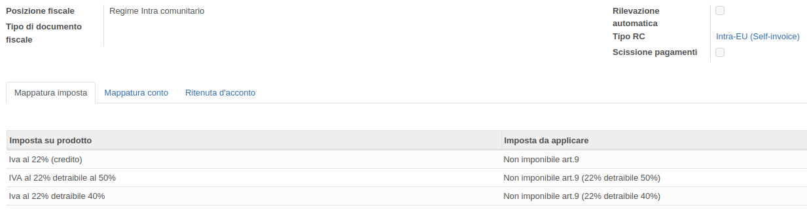

Reverse Charge for Italy


Module to handle reverse charge IVA in vendor bills.
The module allows you to automate the accounting entries derived from invoices of intra-EU and extra-EU suppliers through the VAT reverse charge. Furthermore, the vendor bill cancellation and reopening procedure is automated.
It is also possible to use the "additional vendor self billing" mode. This mode is typically used for non-EU suppliers to show, in the purchases VAT journal, a vendor bill addressed to your own company (self-bill). The self-bill will then be completely reconciled with the self-invoice, which is also addressed to your own company.

Inversione contabile
Modulo per gestire l'inversione contabile (reverse charge) nelle fatture fornitore.
Il modulo permette di automatizzare le registrazioni contabili derivate dalle fatture fornitori intra UE ed extra UE mediante l'inversione contabile IVA. Inoltre è automatizzata la procedura di annullamento e riapertura della fattura fornitore.
È inoltre possibile utilizzare la modalità "con autofattura fornitore aggiuntiva". Questa modalità è usata tipicamente per i fornitori extra UE per mostrare, nel registro IVA acquisti, una fattura intestata alla propria azienda (autofattura passiva). L'autofattura passiva verrà poi totalmente riconciliata con l'autofattura attiva, anch'essa intestata alla propria azienda.


To configure this module, you need to:
Creare l'imposta 22% intra UE Vendita:
Creare l'imposta 22% intra UE Acquisti: Creare l'imposta 22% extra UE Vendita: Creare l'imposta 22% extra UE Acquisti: Creare il tipo reverse charge Intra UE (autofattura): Il sezionale autofattura deve essere di tipo 'vendita' Creare il tipo reverse charge Extra-EU (autofattura) : Il 'Sezionale autofattura passiva' deve essere di tipo 'acquisto' Il 'Conto transitorio autofattura' va configurato come segue: Il 'Sezionale pagamento autofattura' deve essere configurato con il 'Conto transitorio autofattura': Nella posizione fiscale, impostare il tipo reverse charge


Authors | Autori:
Contributors | Partecipanti:
This module is maintained by the SHS_AV s.r.l..
This module is part of l10n-italy project.
Published information on | Informazioni pubblicate: 2024-04-22